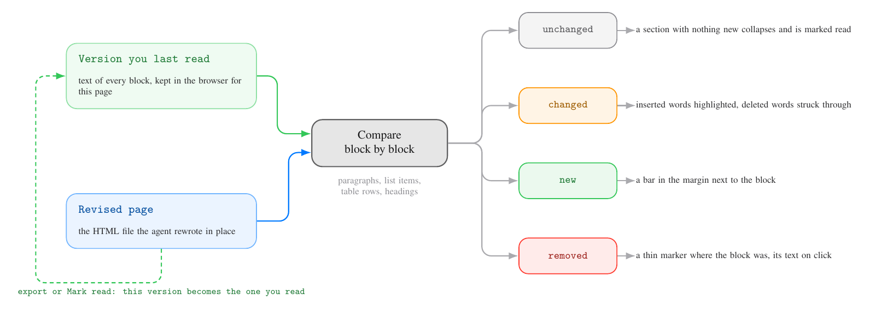

report-html template · Built
Change tracking for report pages
The browser keeps the version of each page you last read and compares every revision against it, block by block and word by word. Changes are highlighted and counted in the outline, and sections with nothing new collapse on their own.
Try it on the demo
Open demo.html?v=1, then demo.html?v=2: the same file shows two versions, so the second opens with its changes marked against the first.
Use the diff button in the top bar or d for the clean view, and ] and [ to step through the changes; Mark read clears them, and opening version 1 again then shows the reverse changes with the unchanged sections folded.
Sections fold only against a version you marked read, so the first comparison, against a reference stored on a first visit, leaves them open.
Your existing pages start tracking on their next visit, which stores the reference; the revision after that shows the marks.
Two problems behind long revisions
- Small edits are invisible: one changed number in a table row looks like every other row.
- Nothing tells you which parts you already read, so a second round means rereading everything or guessing.
Both need the same reference point: the version you last read.
The agent's previous file is the wrong reference, because you may have skipped a revision, or opened a page without reading it.

What you decided
- Block and word diff, without an agent callout explaining the changes.
- A top-bar button shows or hides every change mark, for a clean read.
- A version counts as read on export and when you press Mark read.
- Sections you read that did not change collapse on load.
- Deleted words show inline, struck through in red.
How it looks in the page
- The top bar group appears only when something changed: the diff button with the count toggles the marks, two arrows step through the changes, and the double check marks the version as read.
- Inserted words are highlighted in green, since orange already means a search match, and deleted words are struck through in red.
- A changed block gets an accent bar in the left gutter, a new block a green bar.
- A removed block leaves a small red minus chip where it was; clicking it shows its text.
- The outline carries a change count per section, next to the search counts.
- Sections without a change collapse on load once the reference is a version you marked read, and the chevron opens them as usual; folds you set on the same version win.
- Below 720 px the arrows hide and the counter stays; ] and [ still work.
Limits
- The reference lives in one browser: Zen and Chrome, or the Mac and the iPad, each keep their own, and a page opened for the first time shows no changes.
- Zen, like Firefox, keeps a separate storage per
file://page, so the reference follows the file: a page copied or renamed starts from scratch. - Chrome gives all
file://pages one shared storage of about 5 MB, so the template keeps the reference of the 40 most recently opened pages and drops older ones. - A block moved to another section counts as removed in one place and new in the other.
- A change in formatting only, such as bold or a link target, does not count as a change.
- Deleted text shown on the page stays out of search, comments and the export, so anchors and selectors keep working.
- A 3000-paragraph page computes its diff in about 100 ms.